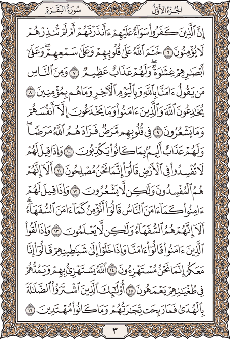

☰

اختيار القارئ
الشيخ عبد الرحمن السديس
الشيخ عبد الباسط عبد الصمد
الشيخ محمد صديق المنشاوي
الشيخ محمود خليل الحصري
أبو بكر الشاطري
إدريس أبكر
إسلام صبحي
فارس عباد
مشاري العفاسي
هزاع البلوشي
محمد اللحيدان
اختيار السورة
اختر السورة
0:00
0:00
▮▶
التالي
↷
تقدم 10 ث
▶
↶
رجوع 10 ث
◀▮
السابق
سور القرآن الكريم
✕
الأجزاء
✕
البحث في القرآن
✕
🔎
يمكنك البحث بكلمة من القرآن، أو باسم السورة، أو برقم الصفحة من 1 إلى 604.
حول
✕
القرآن الكريم
المصمم أبو إسلام
© 2026 — جميع الحقوق محفوظة
خالصا لوجه الله
لا تنسونا من صالح دعائكم